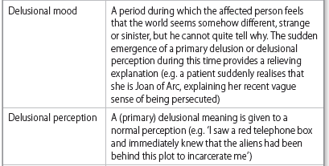

Chapter 3: Psychiatric History Taking & Mental Status Examination
"The secret of the care of the patient is in caring for the patient." - Francis Peabody, M.D. (1881-1927) |
1. Introduction
2. Interview Techniques
3. Rapport, Empathy, Transference and Counter-transference
4. Psychiatric History - What information needs to be collected
5. Flow of the psychiatric interview
6. SDL and review for History taking
7. Mental Status Examination
8. SDL and review of mental status examination
Introduction
The psychiatric assessment is different from a medical or surgical assessment in that: (1) the history taking is often longer and requires understanding each patient’s unique background and environment; (2) a mental state examination (MSE) is performed; and (3) the assessment can in itself be therapeutic. Fig. 1.1 provides an outline of the psychiatric assessment, which includes a psychiatric history, MSE, risk assessment, physical examination and formulation.
|

Interview Techniques
|
Rapport, Empathy, Transference and Countertransference
|
Psychiatric History - What all information needs to be collected
Click here to download history taking proforma.
Identifying information |
• Name • Age • Marital status • Occupation • Reason for the patient’s presence in a psychiatric setting and informants from whom history is taken (e.g. referral to out-patient clinic by family doctor, admitted to ward informally having presented at casualty) • Legal status (i.e. if detained under mental health legislation) e.g. Mrs LM is a 32-year-old married housewife referred by her family doctor to a psychiatric out-patient clinic. |
Presenting complaint |
• Open ended questions - How can we help you? Why have you come for this visit today? • Record the main problems in the patient’s own words, in one or two sentences, instead of using technical psychiatric terms. e.g. Mrs LM complains of ‘mane khabar nathi ke hoon kon chu, hoon andar thi ekdam khali thai gayi chu' • If there are more than one complaint then it may help to organize multiple presenting complaints into groups of symptoms that are related e.g. Mrs LM complaints of feeling sad, difficulty sleeping and low self esteem since 2 weeks. • Sometimes it is not possible to organize symptoms into a group of related symptoms. In that care just write the chief complaint as the presenting complaint and describe the rest in the HPI section. |
HPI (History of Presenting illness) |
This is by far the most important section of the history taking. This section is concerned with eliciting the nature and development of each of the presenting complaints.
Figure: Generating Hypothesis while collecting HPI The following headings may be helpful in structuring your questioning: • Duration: when did the problems start? • Development: how did the problems develop? • Mode of onset: suddenly, or over a period of time? • Course: are symptoms constant, progressively worsening or intermittent? • Severity: how much is the patient suffering? To what extent are symptoms affecting the patient’s social and occupational functioning? • Associated symptoms: certain complaints are associated with clusters of other symptoms that should be enquired about if patients do not mention them spontaneously. This is the same approach as in other specialties; for example, enquiring about nausea, diarrhoea and distension when someone reports abdominal pain. When ‘feeling low’ is a presenting complaint, biological, cognitive and psychotic features of depression, as well as suicidal ideation, should be asked about. Vegetative symptoms may be asked for in all cases. • Precipitating factors: psychosocial stress frequently precipitates episodes of mental illness (e.g. bereavement, moving house and relationship difficulties). • Any treatment taken and its effects • ICE - Ideas, Concerns and Expectations • Psychiatric review of systems: You can also ask about symptom clusters for psychosis, anxiety, eating problems, substance use and cognitive problems, among others. DAMP DESPOT DADS Common presentations encountered in Clinical practice • Depressive symptoms • Anxiety • Psychosis • Mania • Problem drinking and smoking • Dissociative symptoms • Obsessions and compulsions • Somatoform disorders • Insomnia • Memory and cognition Another way to assess the HPI is to use to NOTEPAD mnemonic • Nature of problem - description of the current problems likes worry, mood, delusion, hallucinations, physical ailment or social problem • Onset • Triggers • Exacerbating / Relieving factors • Progression (improving, worsening, staying the same; intermittent or continuous) • Associated symptoms • Disability (Effect on life) + treatment, ICE and psych ROS as described above Collateral history - that is corroborative history from reliable informants on the above is essential. |
Past psychiatric history |
• Previous or ongoing psychiatric diagnoses • Dates and duration of previous mental illness episodes • Previous treatments, including medication, psychotherapy and electroconvulsive therapy • Previous contact with psychiatric services (e.g. referrals, admissions) • Previous assessment or treatment under mental health legislation • History of self-harm, suicidal ideas or acts |
Family history |
Enquire about the presence of psychiatric illness (including suicide and substance abuse) in family members, remembering that genetic factors are implicated in the etiology of many psychiatric conditions. A family tree may be useful to summarize information. |
Past medical history and Systems review |
Enquire about medical illnesses or surgical procedures. Past head injury or surgery, neurological conditions (e.g. epilepsy) and endocrine abnormalities (e.g. thyroid problems) are especially relevant to psychiatry. Also ask about current medications and drug allergies. Use the body locus method for remembering the systemic review of systems. link
|
Substance history |
This section should never be overlooked, as alcohol/substance-related psychiatric conditions are very common. The CAGE questionnaire is a useful tool to screen for alcohol dependence. If a patient answers affirmatively to two or more questions, regard the screen as positive and go on to check if they meet criteria for alcohol dependence syndrome: • When started? • Current use - what, where, when, who, tried to stop? • Biological dependence - get shakes when not drink; drink more than you used to, to get same effect? • Psychological dependence - Compulsion to drink; how important is drinking for you; If you stop drinking do you notice that you feel down, angry, anxious? • Effects - How has alcohol impacted your relationships, ability to work, any alcohol rel. crimes • Health - Diet, ALD, UGI bleeding, Black colored stool, Pancreatitis, Cardiomyopathy If recreational drugs have been or are being used, record the drug names, routes of administration (intravenous, inhaled, oral ingestion) and the years and frequency of use. Also enquire about possible dependence. |
Personal history |
Achieved developmental milestones on time, friends in school, history of trauma or abuse, performance academically. Also include income source, employment, education, place of residence, who they live with, number of children, support system, religious affiliation and beliefs, legal history. |
Premorbid personality |
Premorbid personality is an indication of the patient’s personality and character before the onset of mental illness. Patients may be asked directly about their personality before they became ill, or it may be useful to ask a close family member or friend about a patient’s premorbid personality. e.g. ‘How would people have described you before?’ |


Flow of the Psychiatric interview
1. Establish rapport Establish rapport and maintain it throughout. First impressions count. Within the first minute, or even the first few seconds, the pt generally forms an impression about you. If the pt sees you as benevolent and trustworthy, all may be well; if not, the pt's attitude may be less than cooperative, and the data gathered in the interview may be unreliable. If you are a medical student, introduce yourself as such, or as a student doctor, but not as a doctor. Thus: “Hi, Maheshbhai, I'm Samir. I'm the medical student working with the Dept. of Psychiatry and I'd like to talk with you and ask a few questions. Would that be O.K.?” 2. Establishing the chief complaint The chief complaint (CC) is the epitome of the pt's illness and must be clearly established at the start of the interview, or the interview will lack proper focus and may fail to provide the necessary dx information. Open the interview with a request for the CC: “I'd like to start by asking you what led to your coming to the hospital” (or “making the appointment to come here today”). Don't begin with an invitation to digress, such as, “Tell me about yourself,” or “What kind of problems have you been having?” Occasionally, pts are unable to provide a CC. Delirious, demented, or floridly psychotic pts may lack the ability to articulate one, and other pts (eg, suspicious pts with delusions of persecution) may distrust the physician and simply be unwilling to offer a CC. Probing for the CC should remain gentle. If the pt starts becoming annoyed, change the subject, and hope that the CC may “leak out” later in the interview. If you're unable to establish a CC, proceed to the directive portion of the interview, and plan on securing the CC during your conversation with collateral sources. 3. Conducting the Nondirective Portion of the Interview As soon as a CC is established, adopt a nondirective approach that invites the pt to relate the hx behind the CC: “He put poison in the coffee? Tell me more about that.” Most pts, with only gentle probiing, will subsequently touch on the basic elements of the hx: the onset of the illness (including approximate date, mode of onset [acute, gradual, insidious], and any precipitating factors); the evolution of signs and symptoms; any aggravating or alleviating factors; any treatment efforts and their results; pertinent positives and negatives; and any hx of similar sx in the past. Use interview techniques to facilitate story telling - Open ended questions, Listening, Continuation and Redirection. 4. Conducting the Directive Portion of the Interview Introduce the directive portion of the interview: “Now I'd like to ask you some routine questions about any other health problems you may have had.” Direct questions are generally more closed-ended and deal with medications, allergies, the past medical history (PMH), review of systems (ROS), family history (fhx), and the mental status examination (MSE). Pertinent positive responses should generally be followed by open-ended probes to flush out the important details. The MSE is saved for last, and those items evident to inspection, or that were already covered, need not be covered again - usually mood, delusions, hallucinations, cognition, insight and judgement. Introduce the cognitive portion of the MSE with a statement like, “Now I'd like to ask you some routine questions to check on memory, arithmetic, and things like that.” 5. Concluding the Interview Conclude the interview with appropriate comments about dx impression, proposed rx, and probable length of stay etc. |
Self directed learning and review for History taking
1. ADMSEP self directed learning module on "The Psychiatric Interview" Link
2. NIMHANS digital academy History taking Part - 1 (09:18min) link
3. NIMHANS digital academy History taking Part - 2 (07:43min) link
|
World Most Famous Severed Ear Click here to read further about "Your First Patient a 35 year old male" |
Mental Status Examination
MSE complements the psychiatric history by providing a cross-sectional, systematic documentation of all the patient’s symptoms and signs during the intreview.
The MSE is divided into seven sections: 1. appearance and behaviour, 2. speech, 3. mood and affect, 4. thoughts form and content, 5. perception, 6. cognition, 7. insight and judgement
Appearance and Behavior |
Appearance and Behavior is described in 5 headings
Catatonia video links -> 1. This video illustrates several forms of catatonia including waxy flexibility, forced grasping, opposition, negativism and aversion. 2. This video demonstrates stereotypies. 3. This video demonstartes echolalia. 4. This video demonstartes 3 patients with catatonia. 5. This 1940's educational video on symptoms of schizophrenia, shows many patients with catatonia.
|
Speech |
Assess the amount, rate, volume and tone of speech. Other abnormalities that may be seen
Videos Logorrhea and Pressure of speech - Video 1 Poverty of speech and Speech Retardation - Video 1 |
Mood & Affect |
Mood is the sustained and pervasive internal emotional tone, that colors the perception of the external environment. (Subjective) Asking about mood: "How has been your mood of lately?"; recod the patients response verbatim. Affect is the objective expression of the internal emotional tone, assesed through the body language, facial expressions and tone of voice. A common phrase is that affect is to mood as weather is to climate. In other words, affect is an observable behaviour reflecting changing emotions (e.g. joy or sadness); mood is a sustained emotional state (e.g. elation or depression). Affect can be described in 2 parts - quality and quantity The following descriptors are commonly used to describe quality of observed mood The quantitative aspects of mood (range, appropriatness and stability) can be described using the following descriptors • Reactive - Normal reactions to the emotional content of the discussion (e.g. smiling when speaking about pleasurable topics) • Expansive - Lacking restraint with emotional expression (e.g. mania, video 1 around 2:15) • Restricted - Mildly reduced range and intensity of emotional expression (video 1) • Blunted/flattening (usually used interchangeably) - Marked reduction/lack of range and intensity of emotional expression (e.g. schizophrenia, depression, organic brain disorders) (video 1) • Incongruous affect - e.g. schizophrenic patient who reports feeling suicidal with a happy facial expression. • Labile mood - refers to a fluctuating mood state, e.g. that in mania (from elated to euthymic) or delirium. |
Thought |
Abnormalities of thought can be described under 3 major subheadings - stream, form and content. Abnormalities of stream Abnormalities of Form
Video of lossening of association - 1, around 2:43 Abnormalities of Content • Preoccupations: Strongly held beliefs which are particularly important in four disorders: depressive, anxiety, eating and sexual. Preoccupations differ from obsessions in that they can be put out of the mind with effort, whereas obsessions repeatedly enter the patient’s mind despite their attempted resistance. • Ruminations: Repetitive internal debates • Obsessions: Distressing thoughts that enter the mind despite the patient’s effort to resist them. This is a feature of obsessive–compulsive disorder. Asking about Obsessions ‘Do certain ideas or images keep entering your mind, even when you try to keep them out?’
• Phobias: fear of a specific situation or object Asking about Phobias ‘Do you have any particular fears or phobias?’ • Overvalued idea: a single atypical but acceptable belief, firmly held but not fixed (cf. a fixed delusion or subjectively senseless obsession), that dominates the person’s life. • Delusion: a fixed and false belief that is held in the face of evidence to the contrary, not explained by culture or religion. The process by which the belief is reached is illogical. Examples of delusional themes are shown in Table below. (video 1, 2) Delusional themes
some descriptors used to further describe delusions
 Asking about delusions It is sometimes useful to begin by stating that you need to ask some routine questions, which ‘may seem a little odd’: • ‘do you have any beliefs that other people find strange?’ • ‘do you have any thoughts that other people don’t share?’ Specific questions to identify delusions more common in schizophrenia are shown in Table • Suicidal ideations Asking for suicidal ideations It sounds as though things have been very difficult for you recently, have they ever been so bad that.......' ' ......you feel life is not worth living? ' ' ......you feel life seems hopeless or pointless? ' ' Do you have thoughts that you do not wake in the morning? ' ' Do you have thoughts of harming self? ' ' Have you thought of ending it all? ' ' Can you tell me about the suicidal thoughts? ' ' What methods have you considered? ' ' Have you made a plan? ' |
Perception |
Illusion - false perception of a real stimulus. They often occur in healthy people. Types include: • Pareidolic illusion: formed images arise from equivocal stimuli, e.g. seeing a face in a cloud • Completion illusion: inattention leads to perceiving incomplete objects as complete, e.g. FIAT seen as FLAT • Affect illusion: caused by the current emotional state, e.g. a scared person walking down a dark road sees a figure in a hedge Hallucinations - perception without a stimulus. Hallucinations can be classifed as shown below: Video on Auditory hallucinations 1. Asking about auditory hallucinations It may be helpful to start by saying: ‘Stress can play tricks on people’s imagination, such as causing them to hear voices when there is no one else there. Has this ever happened to you?’ Auditory hallucinations If voices are present, try to find out further details. For each voice, establish • where it comes from (coming from some part of the body) • who it belongs to • what it says • its nature (a running commentary, discussion about the patient, thought echo) • the patient’s view on the voice; i.e. their insight into the hallucination • the effect on the patient; is it distressing, can any commands be ignored? • frequency • duration Descriptors of auditory hallucinations • third person: voices discuss the patient • running commentary / second person: voices comment on the patient’s thoughts or actions. They can also issues commands to be patient in which case command hallucinations are also described. • thought echo / first person: the patient’s thoughts are heard spoken aloud Asking about other hallucinations Other modalities Hallucinations in other modalities should be asked about: • ‘Have you ever seen anything unusual?’ • ‘Have you ever had a vision?’ • ‘Have you ever experienced a strange taste/smell without anything to cause it?’ • ‘Have you ever had any strange sensations even though there seemed to be nothing to cause it?’ Few points about other modality hallucinations Special types of hallucinations Hypnogogic and hypnopompic hallucinations occur around sleep: a hypnogogic hallucination occurs when going to sleep, whereas a hypnopompic hallucination occurs on waking up. They can be: • visual, auditory or tactile in nature • normal; they can also occur in a variety of disorders, including delirium, schizophrenia and narcolepsy Pseudohallucinations - less vivid and perceived to arise from the mind (i.e. the person has insight). |
Cognition |
A brief test of cognition may involve the following: • orientation: to time, place and person (themselves) • attention and concentration - digit span, forward and backwards • memory - immediate by 3 word retention, recent by recall of 3 words after 5 minutes, remote by asking personal information • calculations - serial 7s • abstraction - proverb testing Assessing cognition Orientation is checked with direct questions: “O.K., now I'd like you to tell me what's the time now", with the pt's response followed by, “And now I'd like you to tell me the name of the building we're in now,” followed by, “and the name of accompanying relative.” I'm going to check on memory by giving you 3 words to remember, because in a few minutes I'll ask you to recall them, O.K.? The 3 words are ‘sparrow, cap, watch.’ Say those once so I know you have them, O.K.?” Assuming the pt has them, check your watch and plan to return to this in 5 minutes. In the meantime, proceed with the rest of the cognitive portion. Proceed to the digit span tests, both forward and backward. Next come calculations. Depending on your estimate of the pt's intelligence, based on vocabulary and evidence of abstract thought earlier in the interview, you may start with serial 7s. Introduce serial 7s with, “If you take 7 away from 100, what do you have?” After the pt responds, follow up with, “Now take 7 away from that number and keep on subtracting 7 each time until you can't go any further.” Proverbs testing is introduced with a statement like, “Now I'm going to mention an old saying, and I'd like you to tell me what it means to you, in your own words. There's no right or wrong answer? So, ‘Don't cry over spilled milk.’ What does that mean to you?” When 5 minutes has passed, ask, “Now I'd like you to recall those 3 words I have you a few minutes ago. What were they?” In clinical practice it is useful to do the MMSE, Mini Mental Status Examination to quickly assess screen cognitive function.The mini-mental state examination may produce false-positive results in various cultural groups and those with low education or intelligence. Conversely, it may not reveal subtle cognitive impairment, especially in intelligent or well-educated patients. |
Insight & Judgement |
Insight is the degree of understanding that a person has of their illness and its impact. It exists on a spectrum, rather than just being present or not. ‘Poor insight’ is characteristic of certain mental disorders, including mania, schizophrenia and dementia. Assessing Insight Determine whether the patient believes that they are unwell by asking, for example: • Do you think there is anything wrong with you? • Why did you come to hospital? If the patient does feel that they are unwell, assess their understanding or belief of what their illness is: • What do you think is wrong with you? • What do you think the cause of it is? • Do you think you need treatment? • Would you accept treatment? Insight is rated on a 6-point scale from one to six. 1. Complete denial of illness. 2. Slight awareness of being sick and needing help, but denying it at the same time. 3. Awareness of being sick, but it is attributed to external or physical factors. 4. Awareness of being sick, due to something unknown in self. 5. Intellectual Insight: Awareness of being ill and that the symptoms/failures in social adjustment are due to own particular irrational feelings/thoughts; yet does not apply this knowledge to the current/future experiences. 6. True Emotional Insight: It is different from intellectual insight in that the awareness leads to significant basic changes in the future behaviour. Judgement is the ability to assess a situation correctly and act appropriately within that situa tion. Both social and test judgement are assessed. i. Social judgement is observed during the hospital stay and during the interview session. It includes an evaluation of ‘personal judgement’. ii. Test judgement is assessed by asking the patient what he would do in certain test situations, such as ‘a house on fire’, or ‘a man lying on the road’, or ‘a sealed, stamped, addressed envelope lying on a street’. Judgement is rated as Good/Intact/Normal or Poor/Impaired/Abnormal. |


Self directed learning and review for Mental Status examination
1. ADMSEP self directed learning module on "Mental Status Exam" Link
2. NIMHANS digital academy Mental Status Exam Part - 1 (10:17min) Link
3. NIMHANS digital academy Mental Status Exam Part - 2 (06:13min) Link
4. NIMHANS digital academy Mental Status Exam Part - 3 (13:43min) Link
Bibliography
1. Crash course in Psychiatry 5e.
2. First Aid to the Psychiatry Clerkship 5e.
3. Psychiatry by Neel Burton 2e.
4. Memorable Psychiatry 1e.
5. Short textbook of Psychiatry 7e.
5. ADMSEP e-modules.
6. NIMHANS digital academy videos.
7. Synopsis of Psychiatry 10e.
8. Psychiatry - PRN 1e.
9. Getting Started in Psychiatry: A guide for junior registrars
10. Psychiatry Algorithms for Primary Care 1e.
11. Psychiatry A Clinical Handbook 1e.
12. Little Black Book of Psychiatry 1e.
13. Psychiatry Illustrated 2e.
14. Pocket Tutor Psychiatry.
15. Pocket essentials of Psychiatry.
Created with the Personal Edition of HelpNDoc: Create help files for the Qt Help Framework